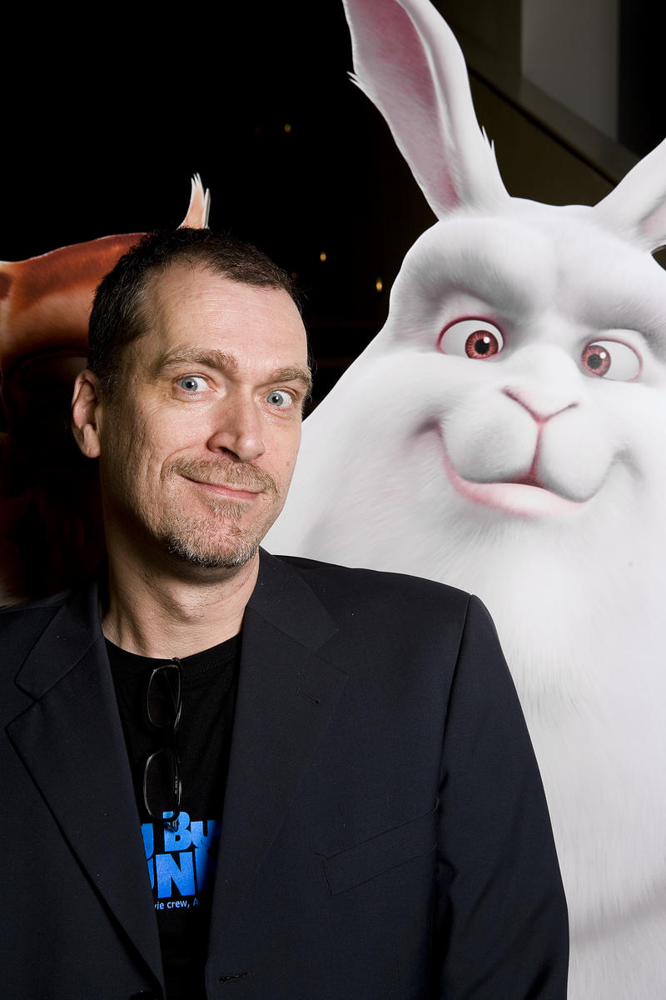
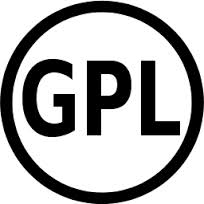
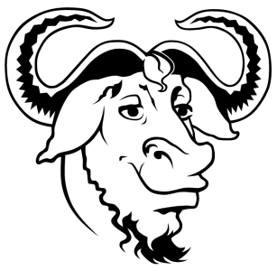
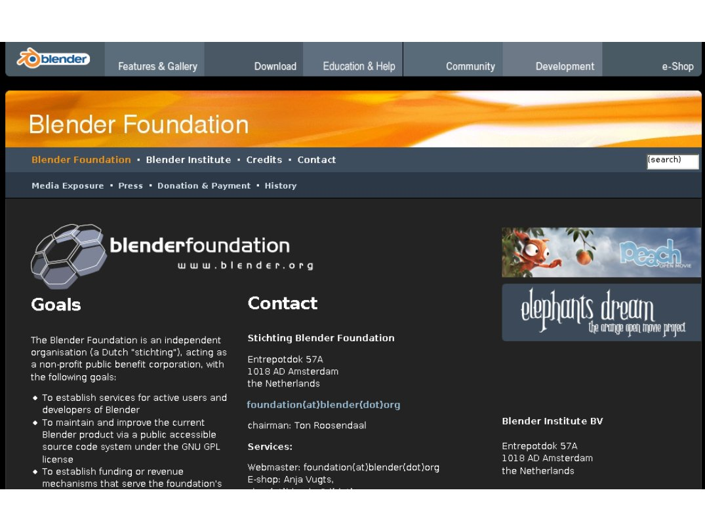
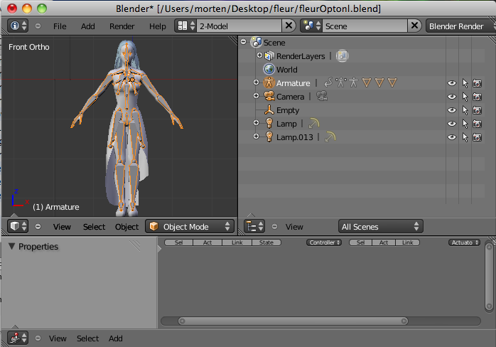
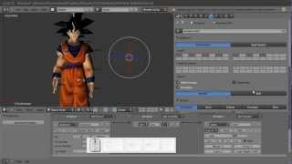
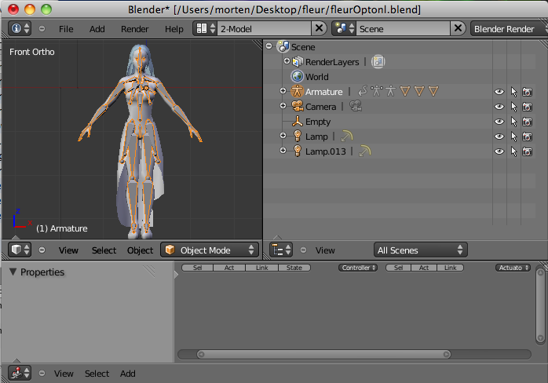
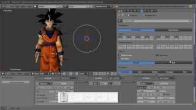

Universidad Mayor de San Andres
Sociedad Científica Estudiantil
Modelado 3Dcon Blender


¿QUÉ ES BLENDER?
Blender es un SOFTWARE LIBRE multi plataforma (MAC OS, GNU/LINUX, WINDOWS, SOLARIS, FreeBSD e IRIX), dedicado especialmente al modelado, iluminación, renderizado, animación y creación de gráficos en 3D.
ALGO DE HISTORIA... LOS INICIOS...
- En 1988, Ton Roosendaal co-fundó el estudio de animación NeoGeo
- En 1995 Ton lidera la reescritura de una nueva herramienta 3D para NeoGeo
NaN...
- Ton decide que Blender puede ser usado por otros artistas fuera de NeoGeo
- En 1998 Ton crea NaN para fomentar y desarrollar Blender, derivada de Neo Geo
NaN...
- Se distribuye gratuitamente Blender, a pesar que los programas comerciales costaban miles de dólares
- NaN fracasa por las dificultades del mercado
LA LIBERACIÓN...
- Ton no permitió que Blender desaparezca y creo la organización no lucrativa Blender Foundation en el 2002
- Ton lidera la campaña "LIBEREN A BLENDER", para adquirir los derechos del código fuente
LA LIBERACIÓN...
- El domingo 13 de octubre de 2002, Blender fue liberado al mundo bajo los términos de la Licencia Pública General de GNU (GPL).
BLENDER FOUNDATION
Blender Foundation continúa el desarrollo y promoción de Blender como un proyecto de código abierto basado en la comunidad de usuarios. Conducido por un equipo de voluntarios procedentes de diversas partes del mundo y liderados por su creador, Ton Roosendaal.
www.blender.org/foundation/
CARACTERÍSTICAS
- ¡Libre y multiplataforma!
- Realmente liviano comparado con otros paquetes de 3D (la versión de Windows pesa sólo 52 Mb.!!).
MÁS CARACTERÍSTICAS
- Capacidad para una gran variedad de primitivas geométricas, incluyendo curvas, mallas poligonales, vacíos, NURBS, metaballs.
- Edición de audio y sincronización de vídeo.
MÁS CARACTERÍSTICAS
- Lenguaje Python para automatizar o controlar varias tareas.
- Características interactivas para juegos como detección de colisiones, recreaciones dinámicas y lógica. (BLENDER GAME ENGINE)
 



MÁS CARACTERÍSTICAS
- Herramientas de animación, se incluyen cinemática inversa, deformaciones por armadura o cuadrícula, vértices de carga y partículas estáticas y dinámicas.
- Simulaciones dinámicas para softbodies, partículas y fluidos.
- Sistema de partículas estáticas para simular cabellos y pelajes, al que se han agregado nuevas propiedades entre las opciones de shaders para lograr texturas realistas.
BLENDER EN ACCIÓN...


Sintel, Kajimba, Big Buck Bunny, Man in Man, Soft Boy, Chicken Chair, Mindfields, Lighthouse, Tears of Steel...
archive.blender.org/features-gallery/movies/LO QUE APRENDEREMOS
Aprenderemos a modelar un objeto o personaje, hacer el rigging (creación de huesos), skinning (control de malla/huesos), UV-Mapping (texturizado 2D), que podremos usar para Diseño gráfico, creación de juegos, o crear nuestra propia animación.